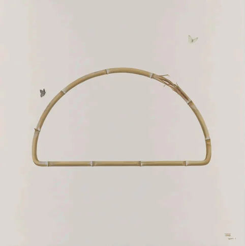
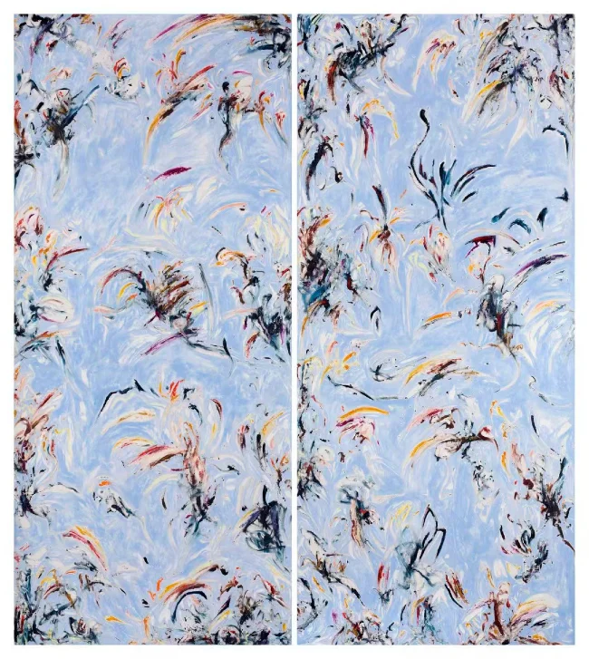
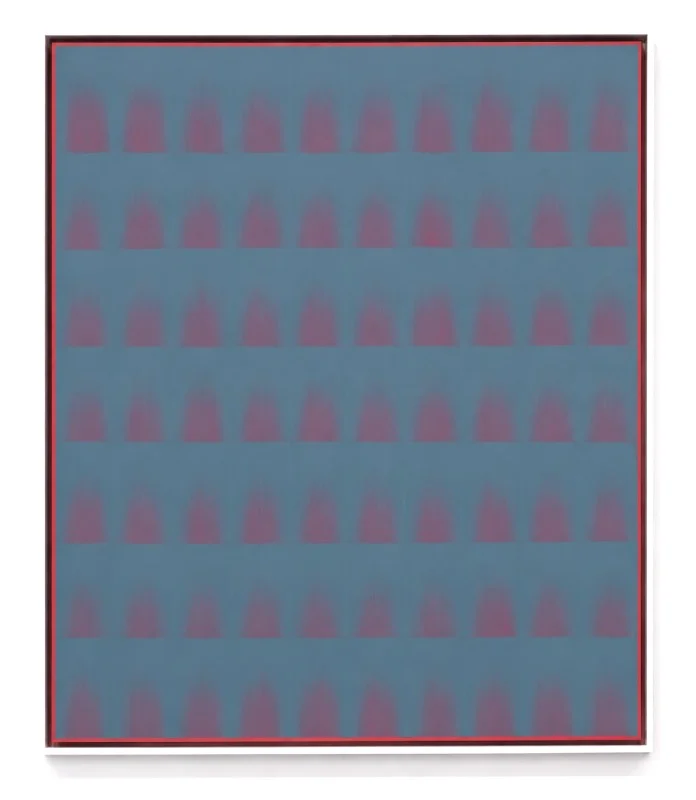
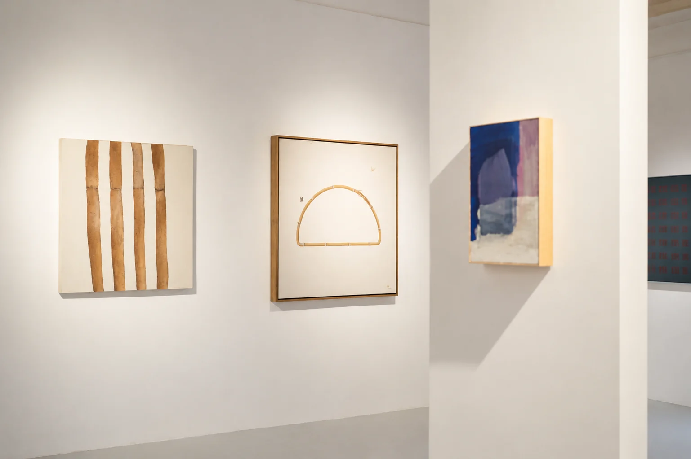
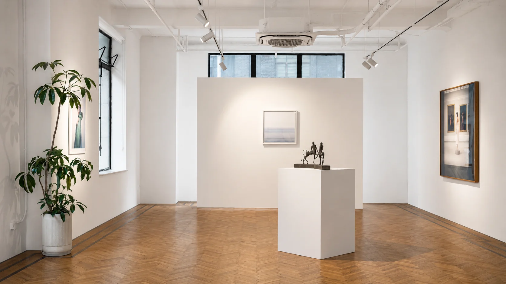

Collection / Selected worksArt in lasting conversation
The Parrot Collection
鹦鹉馆藏

The story
A collection is a continuing conversation with artists and their worlds.
The Parrot's collection brings different materials, visual languages and artistic perspectives into dialogue. These selected works, documented in the foundation's portfolio, range from painting on canvas to acrylic on aluminium composite panel.
- Featured artists
- Selected works by Wu Didi · Marie de Villepin · Peng Yong
- From the archive
- The Parrot 2026 · pp. 55, 56, 57, 58, 59




